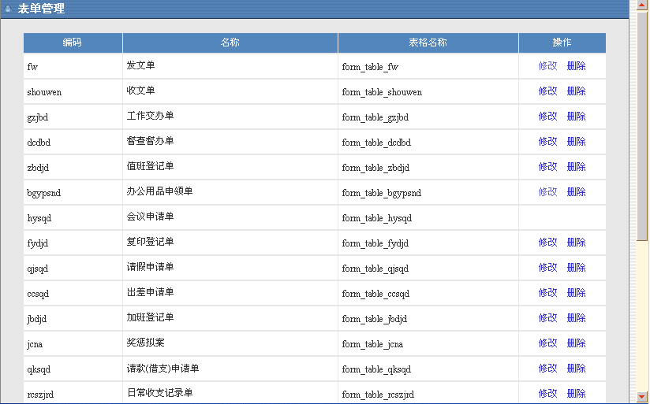
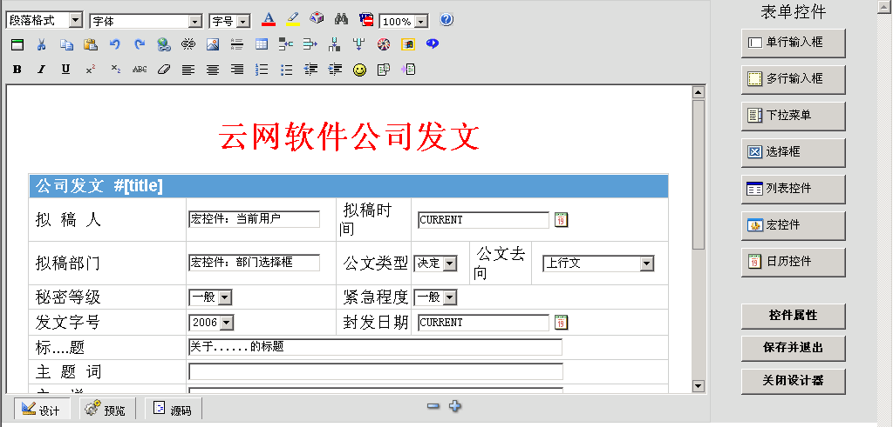
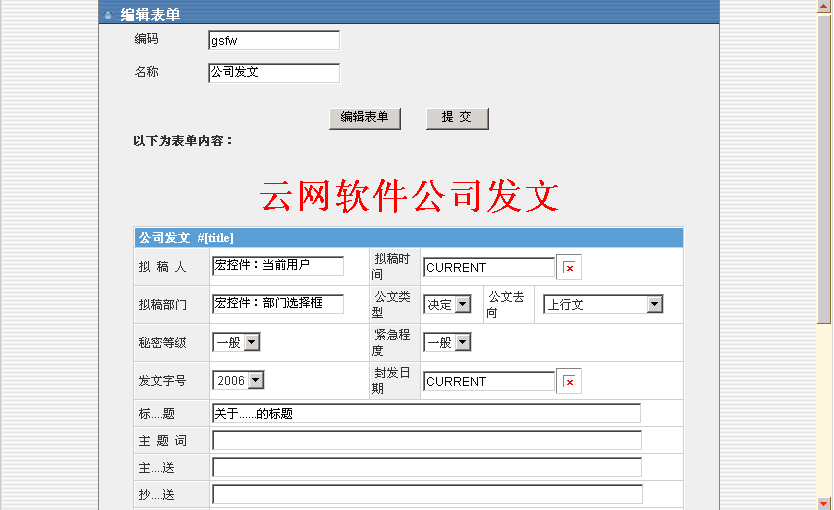
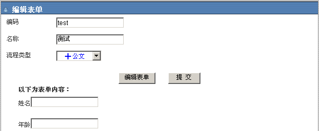
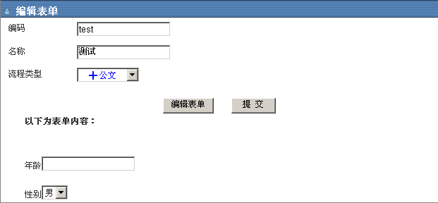
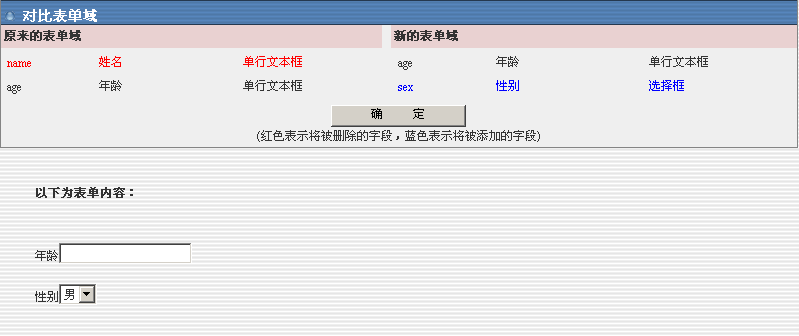

预设表单
|
| 通过本模块对企事业单位的流程用到的表单进行可视化自定义管理，使一个流程对应一个表单。
该模块包括以下功能：
|
| |
| 1、添加表单的方法。点击“增加表单”来创建表单。下面是“创建表单”整个过程 |
| 下图是“预设表单列表” |

图（1） |
| （1）输入“编码”（注：编码不能相同）、“名称”，选择“流程类型”（注：流程类型必须选择，“无”这个选项是开发人员用在智能模块设计中的）。 |
图（2） |
| （2）点击“编辑表单”进入“可视化表单设计器”（图（3）），“可视化表单设计器”的右边是一列表单控件，左边的上半部分是工具栏，用户可以根据自己的需要添加并修改表单中的内容（注：表单控件标识要生成表中的字段名，所以必须用字母拼写）。 |

图（3） |
| （3）点击“保存并退出”回到图（4）。如果发现表单中有问题，可以点击“编辑表单”回到图（3）的界面对表单进行修改。如果确认无误点击“添加新的表单”回到图（1），这时可以看到新加的表单名在“预设表单列表”中出现。 |

图（4） |
| |
| |
| 2、修改表单的方法。点击图（1）中的“修改”操作。下面是“创建表单”整个过程 |
| （1）修改表单时，“编码”是不许修改的、“名称”和“流程类型”（注：流程类型必须选择，“无”这个选项是开发人员用在智能模块设计中的）是可以修改的。 |

图（5） |
| （2）点击“编辑表单”进入“可视化表单设计器”（图（6）），“可视化表单设计器”的右边是一列表单控件，左边的上半部分是工具栏，用户可以根据自己的需要添加并修改表单中的内容（注：表单控件标识要生成表中的字段名，所以必须用字母拼写）。 |
图（6） |
| （3）点击“保存并退出”回到图（7）。如果发现表单中有问题，可以点击“编辑表单”回到图（6）的界面对表单进行修改。如果确认无误点击“提交”。 |

图（7） |
| （4）图（8）是一个比对页面，红色表示将被删除的字段，蓝色表示将被添加的字段。点击“确定”后回到图（7），表单修改完成。 |

图（8） |
| |
| 3、如果要修改销售管理模块中的表单，把页面先切换到图（1），再按CTRL+ENTER键，然后对“表单列表”中的表单进行修改。 |
| |
4、流程表单中用到的宏控件主要有以下几个：
（1）用户列表。用户列表控件的用处：实现把OA中的用户信息通过下拉框的方式放到流程表单中。
（2）部门列表。部门列表控件的用处：实现把OA中的部门信息通过下拉框的方式放到流程表单中。
（3）意见框。意见框宏控件的用处：实现流程中某个节点多人处理，并把多人意见追加到意见框中。
（4）序列号。序列号宏控件的用处：实现流程中表单编号自动增长。 |